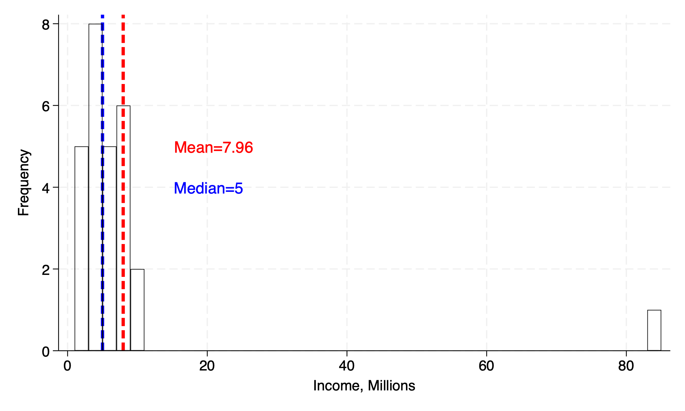
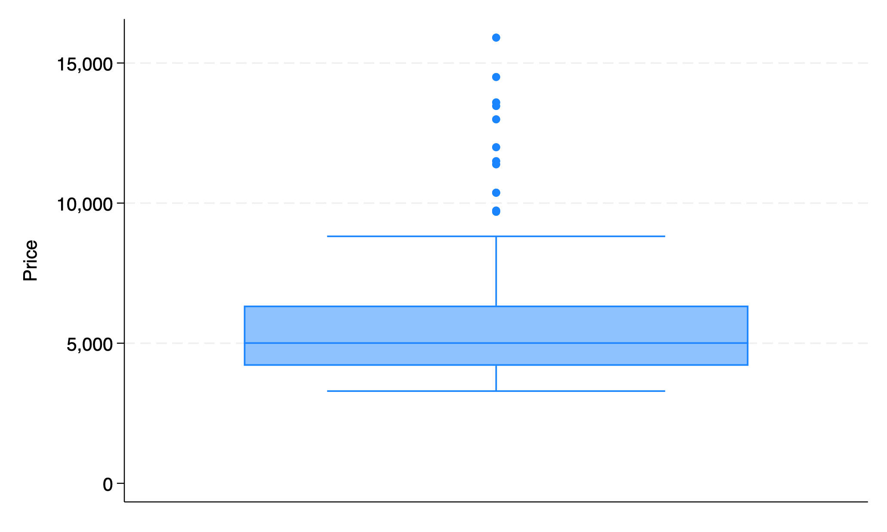
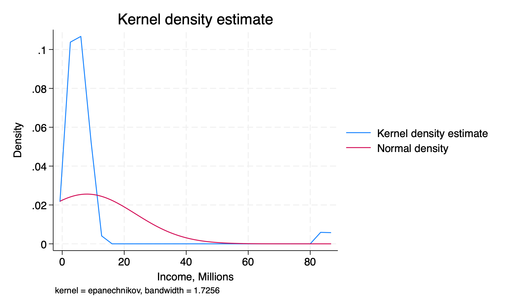
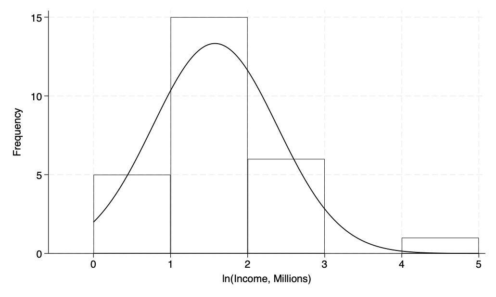

(1978 automobile data)
Price
-------------------------------------------------------------
Percentiles Smallest
1% 3291 3291
5% 3748 3299
10% 3895 3667 Obs 74
25% 4195 3748 Sum of wgt. 74
50% 5006.5 Mean 6165.257
Largest Std. dev. 2949.496
75% 6342 13466
90% 11385 13594 Variance 8699526
95% 13466 14500 Skewness 1.653434
99% 15906 15906 Kurtosis 4.819188ECN 102: Analysis of Economics Data
Chapter 2: Univariate Data
Summary Statistics
Overview
We will start our discussion of univariate data with summary or descriptive statistics:
Population size: \(N\) (big)
Sample size: \(n\) (little)
Measures of central tendency: where is the data centered?
Measures of spread: how squished or spread out is the data?
As before, we denote cross-sectional data \(x_i\), where \(i\) is the index of the observation. What would \(x_1\) be? \(x_{n-1}\)? \(x_n\)?
Central Tendency: Mean
Central tendency: sample mean (arithmetic mean)
\[\bar{x} = \frac{x_1+x_2+...+x_n}{n}\]
\[\bar{x} = \frac1n \sum_{i=1}^n x_i\]
. . .
Population mean
\[\mu = \frac1N\sum_{i=1}^N x_i\]
Percentiles and Quartiles
We can divide our data into quartiles, deciles, percentiles, and more. The name indicates how many pieces we cut our data into:
quartile: data is divided into 4 pieces
decile: data is divided into 10 pieces
percentile: data is divided into 100 pieces
We often talk about the upper or lower quartile, the value that contains 25% of the data below or above it. We denote these \(p^{75}\) and \(p^{25}\). We give the middle quartile (or 50th percentile) a special name.
Central Tendency: Median
Central tendency: sample median
\(\Rightarrow\) The median is the 50th percentile of ordered data, or the value 50% of my data is above and 50% is below. Its formula depends on whether \(n\) is odd or even:
Odd: \[Median=x_{(n+1)/2}\]
Even: \[Median=\frac{x_{(n/2)+1}+x_{n/2}}{2}\]
Note we need to order our data from small to large to apply this formula for the median.
Median vs. Mean: Outlier Robustness
The sample median will be less affected by outliers than the sample mean, as it only considers at most two central observations instead of all observations.
We use the median in cases where the data is likely to be very left- or right-skewed by outliers, such as a sample of annual income that includes someone like Bill Gates.
Example: Mean vs. Median

Central Tendency: Mode
Central tendency: mode
The mode is the most represented value in the data. Data can be multi-modal, where multiple values are equally represented most often in the data.
We may want to invoke the mode when data is discrete or continuous but highly rounded.
Spread: Range and IQR
Spread: range and interquartile range (IQR)
Range is hopefully familiar, \(\max\{x_i\}-\min\{x_i\}\)
IQR is the difference between 75th and 25th percentiles, \(p^{75}-p^{25}\). The IQR captures the middle 50% of our data.
Spread: Sample Variance and Std Dev
Spread: sample variance
Sample variance is the sum of squared deviations in our data, \((x_i-\bar{x})^2\). We cannot simply use \(x_i-\bar{x}\), as this will always sum to zero. We denote this: \[s^2=\frac{1}{n-1}\sum_{i=1}^n (x_i-\bar{x})^2\]
To return our measure of spread to the units of our original data, we take the square root and obtain the sample standard deviation: \[s=\sqrt{s^2} = \sqrt{\frac{1}{n-1}\sum_{i=1}^n (x_i-\bar{x})^2}\]
Spread: Population Variance and Std Dev
Spread: population variance, std dev
\(\Rightarrow\) Like before, we can also compute population parameters for spread if we know our entire population. However, this will require a slight change to the formula, which we will explore later.
\[\sigma=\sqrt{\sigma^2}=\sqrt{\frac1N\sum_{i=1}^N(x_i-\mu)^2}\]
Generally, a standard deviation tells us how far away an average observation is from the mean.
Review: Sample Statistics and Parameters
To review, we have two main sample statistics (\(\bar{x},s^2\)) and two main population parameters (\(\mu,\sigma^2\)) to measure central tendency and spread, respectively. Generally, we give the mean and variance in parentheses for a given variable — remember to take the square root for standard deviation!
Spread: Coefficient of Variation
However, simply having higher standard deviation does not necessarily mean a variable has more variability relative to its mean or dispersion — its units could simply be larger.
For example, \(x=(5,64); y = (1,25)\). Does \(x\) or \(y\) have a higher level of dispersion?
. . .
\(\Rightarrow\) To answer this, we must introduce the coefficient of variation (CV), which weights our measure of spread by our measure of central tendency: \[CV=\frac{s}{\bar{x}}\]
Since \(\frac51>\frac85\), \(y\) has a higher level of dispersion, despite having a lower standard deviation.
Skewness
We also have more complicated summary statistics for our data:
Symmetry of our data means it can be perfectly reflected around the median (\(p^{50}\))
Data that has a tail to the right is right- or positive-skewed
Data that has a tail to the left is left- or negative-skewed

Measuring Skewness
We say our data is:
right-skewed if it has a skewness \(>0\)
left-skewed if its skewness \(<0\)
symmetric if its skewness \(=0\)
Skewness: Mean vs. Median
We can also use the comparison between our computed mean and median to impute skewness. What does it mean to have:
\(\bar{x}>median\)?
\(\bar{x}<median\)?
\(\bar{x}=median\)?
Kurtosis
We will consider one more measure of our data, kurtosis. This is a measure of how fat the tails of our data are; how represented values far away from the mean are.
We define a normal distribution as one with symmetry/zero skewness (median=mean) and a kurtosis of exactly 3
Distributions with a kurtosis \(>3\) have fatter tails than the normal, and those with kurtosis \(<3\) have thinner tails than the normal
Putting It Together
Together, central tendency, spread, skewness, and kurtosis characterize datasets we will work with. Understanding how our dataset compares to a normal distribution will be important for the statistical inference we will conduct.
Data Visualization
Overview
We will now move to standard ways to visualize data we have collected. This often comes in the form of plots or summary tables. You will be asked to replicate many of these for example data in Stata for homework.
Summary Statistics Table
A summary statistics table gives the statistics we have discussed above for a given sample of data:
Box-and-Whisker Plot
A box[-and-whisker] plot gives the median, IQR, (skewness,) and any outliers for a given variable:

Frequency Table
A frequency table gives statistics for each value of a variable:
Frequency is how often a given value of a variable is represented in our data
Relative frequency (or percent) is this quantity scaled by the total frequency of all values
Cumulative percent is the proportion of total values made up by the given value and all previous/lower values
Frequency Table: Example
Car origin | Freq. Percent Cum.
------------+-----------------------------------
Domestic | 52 70.27 70.27
Foreign | 22 29.73 100.00
------------+-----------------------------------
Total | 74 100.00Histogram
A histogram plots frequency of data values organized into bins. As a researcher, it is often up to you to determine the optimal bin width for the data you are presenting. (Common default \(\sqrt{n}\))

Kernel Density Plot
A kernel density plot is a smoothed version of the histogram that uses windows instead of bins. The weights given to values within a window are called kernel weights. The kernel density plot is a smooth curve that estimates the underlying distribution of the data, and can be overlaid with a normal distribution for comparison.

Bar Charts and Pie Charts
Some additional charts:
Bar charts plot values for discrete categories instead of continuous bins or windows
Pie charts give each value as a relative frequency of a total
Data Transformations
Log Transformation
Sometimes we may need to apply a transformation to our data to have it appear more symmetric. One such transformation for right-skewed data is often the natural logarithm, which can reduce large outlying (right) values.
\(\Rightarrow\) Data that appears normal once log-transformed is said to follow a lognormal distribution.
Log Transformation: Example

Standardization and Z-Scores
We may also want to standardize our data and transform it into a z-score. To do this, we subtract the population mean and divide by the population standard deviation: \[z_i=\frac{x_i-\mu}{\sigma}\]
Note: z-scores will always have \((0,1)\) as a result but will not magically become normally distributed. A non-normal standardized variable will remain non-normal even as \(n\rightarrow\infty\). A distribution that is normal will remain normal after standardizing.
Interpreting Z-Scores
Standardized [z-]scores allow us to compare values from series that are scaled differently, such as two different exams with different means and standard deviations. A 1-unit change in a standardized variable will always correspond to \(\pm\sigma\) for that series.
If you scored an 80 on an exam with \((65,100)\) and a 62 on an exam with \((50,36)\), on which exam did you perform better relative to the average?
Growth Rates
It may be more interesting to analyze the growth rates of a variable than the variable itself (or even, growth rates of growth rates, e.g. inflation). To compute a growth rate for a variable \(x_t\): \[\%\Delta x_t=100\times\frac{x_t-x_{t-1}}{x_{t-1}}\text{ or }100\times\left(\frac{x_t}{x_{t-1}}-1\right)\]
We may need to annualize this data if it does not come from a year-frequency series already. For quarterly data, this would mean multiplying the growth rate by 4.
End of Lecture Material
Knowledge Check 2
Suppose we compute \(\bar{x}=2.5, Median=1.5\) for a sample of data:
Without using formulas, is this data symmetric or skewed? Is it normally distributed?
Would you expect the z-scores for these observations to be normally distributed? Why or why not?